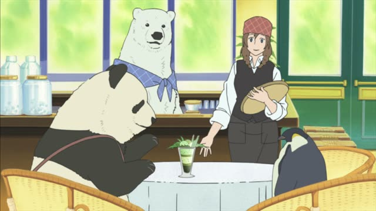
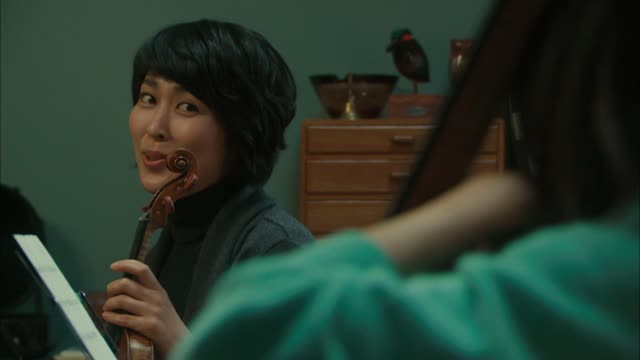
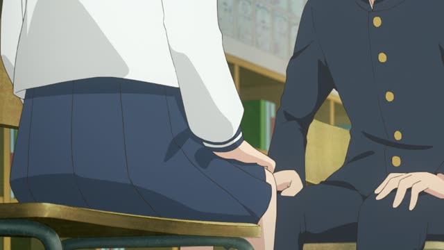
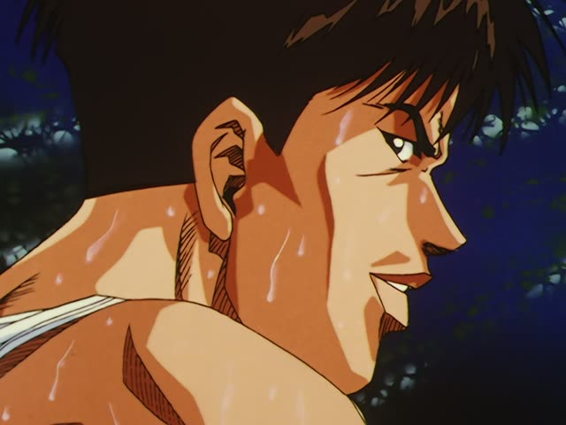

～てみる
| Polite | ～てみます |
|---|---|
| Casual | ～てみる |
Same meaning: "try doing it (and see)". Only the politeness changes.

Shirokuma Cafe · Episode 5
パンダくんに聞いて作ってみました。
"I asked Panda and tried making it." [a bamboo parfait]
～てみる means "try doing it and see what happens". て-form + みる: 作ってみる, 食べてみる.
On this card, Sasako shows off a bamboo parfait she tried making. ました makes it polite.
It's about testing something out, not about effort. "Try hard" is 頑張る.
Dungeon Meshi · Episode 3
やってみるか？
"Wanna give it a try?" [cooking a monster nobody has eaten]
On this card, Senshi has never cooked this monster before and suggests they just try. やってみる: do it and see.
Quick Examples
At a shop.
この服、着てみてもいいですか？
"Can I try this on?"
てみてもいい: may I try.
PoliteYour friend made curry.
ちょっと食べてみて。
"Try a bit."
CasualYour boss asks about a new app.
今日使ってみます。
"I'll try it out today."
PoliteTalking about travel.
いつか北海道に行ってみたい。
"I want to go to Hokkaido someday."
てみたい: want to try.
CasualWith and without
ラーメンを食べた。
"I ate ramen."
ラーメンを食べてみた。
"I tried the ramen (to see what it's like)."
Examples from Media
Oishinbo · Episode 47
じゃ、おばさん、こっちを食べてみてください。
"Then, ma'am, try this one."
1 Litre of Tears · Episode 11
亜也に聞いてみます。
"I'll ask Aya."
Ask and see what she says.

Quartet · Episode 1
今度、誘ってみます。
"I'll try inviting her next time."
Goblin Slayer · Episode 10
だったら、これを飲んでみませんか？
"Then why not try drinking this?"

Teasing Master Takagi-san · Season 2, Episode 1
右手上げてみて。
"Try raising your right hand."
Takagi tests Nishikata.

Slam Dunk · Episode 45
止められるもんなら止めてみろ。
"Try stopping me, if you can."
てみろ: rough "go on, try it".
Kotaro Lives Alone · Episode 3
目とか大きくしてみたんすけど…
"I tried making the eyes bigger and stuff..."
Good Morning Call · Episode 9
ちょっと頑張ってみようかな。
"Maybe I'll give it a shot."